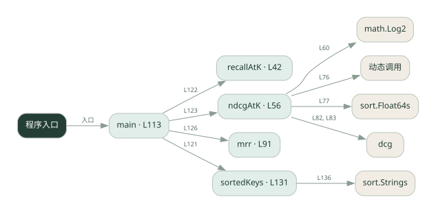

3-8 · 全课程第 48 节
检索质量指标
043.go
源码快照 6a336e97fc94 · 静态解析 · 2026-09-10
01 / 要完成的事
计算 Recall@k、NDCG@k 和 MRR，对比命中数量和排序位置。
02 / 为什么要做
找到相关文档与把最相关结果排前面是不同能力。
03 / 当前代码状态
主要展示本地计算、内存状态或模拟流程；是否写文件/启动子进程请看调用表。 本次只做静态解析，没有运行练习，也没有替你填写或修改原代码。
04 / 调用图
打开大图 ↗实线：源码中的直接调用；虚线：函数引用/注册、动态调用或按方法名推断的候选。L 是调用所在源码行号。箭头不表示执行顺序或每次必经；分支、循环、异步调度及框架内部调用需结合源码。灰色是外部/未解析目标，橙色是动态分发；省略 print、len 和常规容器操作以减少干扰。孤立函数可能尚未接入。

先从 main（程序入口） 出发，沿箭头找到本文件函数，再查看外部调用或动态分发。右侧调用清单保留所有静态调用点，能回到原文件逐行对照。
05 / 函数定位
| 函数 / 定义行 | 职责（源码注释） | 内部调用 |
|---|---|---|
recallAtKL42 | recallAtK：召回率@k = 前 k 个命中的相关文档数 / 相关文档总数 | float64, len |
ndcgAtKL56 | ndcgAtK：NDCG@k = DCG / IDCG（考虑排序位置，位置越靠前折扣越小、贡献越大） | math.Log2, float64, append, 动态调用, sort.Float64s, len, dcg |
mrrL91 | mrr：每个查询「第一个相关文档」出现在第几名，取倒数后求平均 | append, float64, len |
mainL113 | 以源码函数体为准；下列调用展示其依赖。 | fmt.Println, fmt.Printf, sortedKeys, recallAtK, ndcgAtK, mrr |
sortedKeysL131 | sortedKeys：把 relevant 的键排序返回（对应 Python 的 sorted(rel)） | make, len, append, sort.Strings |
这样做的优点
能把“检索好不好”拆成可测指标。
代价与局限
需要可信相关性标注；空集合、重复结果和 k 的选择会影响比较。
适用场景
检索参数和排序方法的离线比较。
不宜直接照搬
没有标注数据时把指标当作真实用户满意度。
动手检验理解
保持命中文档不变，只把相关文档往后移，观察三个指标怎样变化。
有未实现位置时先预测，再补齐验证。能启动不等于逻辑正确。
查看全部 35 个静态调用 / 引用点
| 调用方 | 目标 | 源码行 | 类型 |
|---|---|---|---|
| recallAtK | float64 | 52 | 调用 |
| recallAtK | float64 | 52 | 调用 |
| recallAtK | len | 52 | 调用 |
| ndcgAtK | math.Log2 | 60 | 调用 |
| ndcgAtK | float64 | 60 | 调用 |
| ndcgAtK | append | 71 | 调用 |
| ndcgAtK | append | 73 | 调用 |
| ndcgAtK | append | 76 | 调用 |
| ndcgAtK | 动态调用 | 76 | 调用 |
| ndcgAtK | sort.Float64s | 77 | 调用 |
| ndcgAtK | len | 78 | 调用 |
| ndcgAtK | dcg | 82 | 调用 |
| ndcgAtK | dcg | 83 | 调用 |
| mrr | append | 97 | 调用 |
| mrr | float64 | 97 | 调用 |
| mrr | append | 103 | 调用 |
| mrr | float64 | 110 | 调用 |
| mrr | len | 110 | 调用 |
| main | fmt.Println | 114 | 调用 |
| main | fmt.Println | 115 | 调用 |
| main | fmt.Println | 116 | 调用 |
| main | fmt.Printf | 120 | 调用 |
| main | fmt.Printf | 121 | 调用 |
| main | sortedKeys | 121 | 调用 |
| main | fmt.Printf | 122 | 调用 |
| main | recallAtK | 122 | 调用 |
| main | fmt.Printf | 123 | 调用 |
| main | ndcgAtK | 123 | 调用 |
| main | fmt.Printf | 126 | 调用 |
| main | mrr | 126 | 调用 |
| main | fmt.Println | 127 | 调用 |
| sortedKeys | make | 132 | 调用 |
| sortedKeys | len | 132 | 调用 |
| sortedKeys | append | 134 | 调用 |
| sortedKeys | sort.Strings | 136 | 调用 |